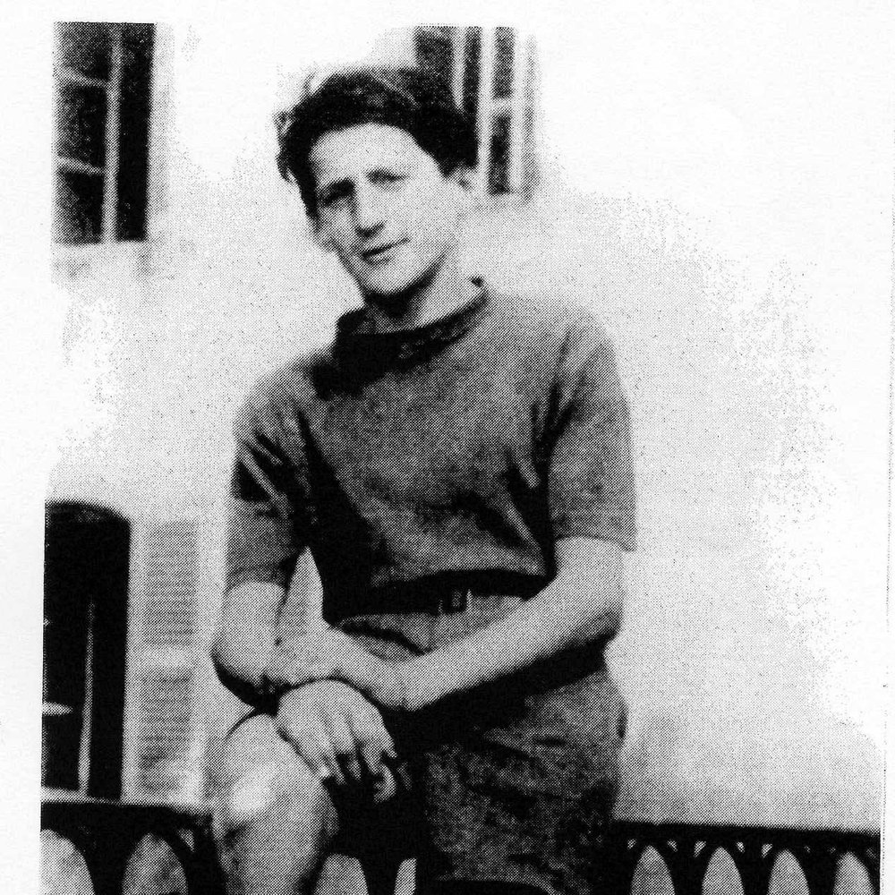

Portrait d’archive
Arnold Hirsch
Arnold HIRSCH
Nom : HIRSCH
Prénom(s) : Arnold
Date naissance : 23/03/1927
Âge (ans) : 17
Lieu naissance : Argenschwang
Pays ou département : Allemagne
Lieu rassemblement : Lyon
Dernière adresse : ?
Ville : Izieu (Ain)
Code postal : 01300
N° Convoi : 73
Date déportation : 15/05/1944
Informations diverses : cf. témoignage, / info Les familles et amis des déportés du convoi 73. Fils de Ida Hirsch née Harf, née le 3 décembre 1900 à Seibersbach (Allemagne) et de Max, né le 8 octobre 1898 à Argenschwang. Ses parents ont été déportés par le convoi n° 20 du 17 août 1942.
Hirsch (Arnold), né le 23 mars 1927 à Argenschwang (Allemagne), décédé le 20 mai 1944 à Kaunas (Lituanie) ou Reval (Estonie) JO
Lieu de déportation : Kaunas-Reval
Lieu de départ : Drancy
Nombre total de déporté·e·s du convoi : 878
Survivant·e·s en 1945 : 17 (1,9 %)